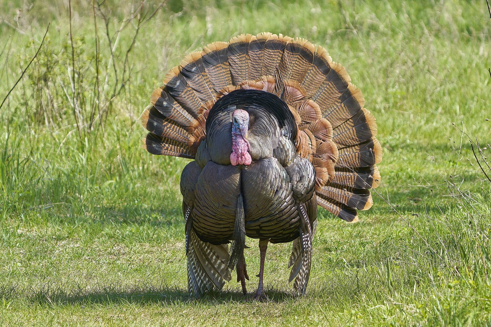

Wall Street e il Ringraziamento: 50 anni di dati su prima, durante e dopo la festa. E perché il 2026 somiglia solo al 2008
Giovedì Wall Street è chiusa per il Thanksgiving (il Ringraziamento) e venerdì lavora mezza giornata. Abbiamo guardato che cosa è successo alla Borsa americana negli ultimi 50 anni intorno alla festa più americana dell'anno: c'è un'abitudine al rialzo, ma meno regolare di quanto dica la leggenda. E il 2026 è un'eccezione.

In sintesi
- Dal 1976 al 2025 l'S&P 500 è salito da lunedì a mercoledì 36 volte su 50, con un rialzo medio dello 0,52%: quattro volte un lunedì-mercoledì qualsiasi.
- La settimana prima non ha nulla di speciale: positiva 28 volte su 50, come una settimana qualunque.
- La settimana dopo sale 33 volte su 50, con una media doppia rispetto al normale.
- Il Black Friday ha perso la sua regolarità: il Nasdaq salì 23 volte su 25 fino al 2000, solo 14 su 25 dopo.
- Il 2026: la settimana prima peggiore in 50 anni (−8,61%) e il secondo lunedì-mercoledì migliore (+3,94%). Solo il 2008 assomiglia.
Giovedì 26 novembre la Borsa di New York è chiusa per il Ringraziamento e venerdì 27 chiuderà in anticipo, alle 13 di New York (le 19 in Italia). È una settimana corta e con pochi scambi, e una tradizione di Wall Street vuole che sia anche una delle più favorevoli dell'anno. Abbiamo controllato su 50 anni di dati, dal 1976 al 2025, misurando l'S&P 500 e il Nasdaq in quattro momenti: la settimana prima della festa, i tre giorni da lunedì a mercoledì, il Black Friday (il venerdì degli sconti) e la settimana successiva. Poi abbiamo messo a confronto il 2026, che sta andando in modo molto diverso dal solito.
Cinquant'anni di Ringraziamento in numeri
Per ogni anno abbiamo calcolato quattro variazioni: la settimana prima (da venerdì a venerdì), il lunedì-mercoledì della settimana della festa (dalla chiusura del venerdì precedente a quella di mercoledì), il Black Friday (la mezza seduta del venerdì) e la settimana dopo (dal Black Friday al venerdì successivo). Nell'ultima colonna, il confronto con un periodo uguale qualsiasi degli stessi 50 anni: media e percentuale di volte in rialzo.
| S&P 500, 1976-2025 | Media | In rialzo | Periodo qualsiasi |
|---|---|---|---|
| Settimana prima | +0,16% | 28 su 50 (56%) | +0,17% · 57% |
| Lunedì-mercoledì | +0,52% | 36 su 50 (72%) | +0,13% · 55% |
| Black Friday (venerdì) | +0,15% | 32 su 50 (64%) | +0,04% · 53% |
| Settimana dopo | +0,34% | 33 su 50 (66%) | +0,17% · 57% |
| Nasdaq, 1976-2025 | Media | In rialzo | Periodo qualsiasi |
|---|---|---|---|
| Settimana prima | +0,17% | 28 su 50 (56%) | +0,23% · 57% |
| Lunedì-mercoledì | +0,45% | 35 su 50 (70%) | +0,10% · 56% |
| Black Friday (venerdì) | +0,36% | 37 su 50 (74%) | +0,05% · 56% |
| Settimana dopo | +0,54% | 32 su 50 (64%) | +0,23% · 57% |
Il risultato più netto riguarda i tre giorni prima della festa. Un lunedì-mercoledì qualsiasi, dal 1976 al 2025, ha visto salire l'S&P 500 nel 55% dei casi, con un guadagno medio dello 0,13%; nella settimana del Ringraziamento la quota sale al 72% e la media allo 0,52%. Anche la settimana successiva va un po' meglio del solito (66% in rialzo contro il 57% di una settimana qualsiasi). La settimana prima, invece, non si distingue in nulla da tutte le altre. In totale, dal lunedì al Black Friday, l'S&P 500 è salito 35 volte su 50.
💡 Impara: l'effetto pre-festivo
Il Pre-Holiday Effect (effetto pre-festivo) è la tendenza delle Borse a salire più del solito nelle sedute che precedono un giorno di festa. Lo hanno documentato diversi studi accademici a partire dagli anni Ottanta, fra cui quelli di Ariel (1987 e 1990). Le spiegazioni proposte sono diverse: dall'umore degli investitori prima delle vacanze agli scambi più scarsi, fino alla spesa delle famiglie per le feste. È una delle «anomalie di calendario» più studiate, ma anche una di quelle che negli ultimi decenni si sono indebolite.
La leggenda è cambiata nel tempo
| S&P 500 | Lunedì-mercoledì | Black Friday | Settimana dopo |
|---|---|---|---|
| 1976-2000 | +0,15% (17/25) | +0,28% (19/25) | −0,09% (16/25) |
| 2001-2025 | +0,89% (19/25) | +0,01% (13/25) | +0,77% (17/25) |
| Ultimi 10 anni | +0,83% (9/10) | −0,14% (6/10) | +0,92% (8/10) |
Dividendo i 50 anni in due metà, il quadro cambia. Il Black Friday era un appuntamento quasi sicuro: dal 1976 al 2000 l'S&P 500 salì 19 volte su 25 e il Nasdaq addirittura 23 su 25. Dal 2001 al 2025 è diventato un lancio di moneta: 13 volte su 25 per l'S&P 500, 14 per il Nasdaq. Al contrario, il lunedì-mercoledì e la settimana dopo sono diventati più favorevoli negli ultimi 25 anni: la settimana successiva, che in media era leggermente negativa fino al 2000, dal 2001 ha guadagnato in media lo 0,77%. Uno studio di CXO Advisory sui giorni intorno al Ringraziamento dal 1950 arriva a una conclusione simile: la forza dei giorni a ridosso della festa resta, ma è «nettamente meno marcata» nei dati recenti, e «il rumore generalmente domina il segnale».
Quando la settimana prima va male
In 22 dei 50 anni l'S&P 500 è arrivato alla settimana del Ringraziamento dopo una settimana in calo. In quei casi il lunedì-mercoledì è stato positivo 17 volte su 22, con un rialzo medio dello 0,92%, molto più che negli anni partiti bene (+0,20%). Anche la settimana dopo è salita 17 volte su 22. Ma i casi estremi sono pochissimi: solo due volte la settimana prima aveva perso più del 3%, e le due storie sono opposte.
| S&P 500 | Settimana prima | Lunedì-mercoledì | Settimana dopo |
|---|---|---|---|
| 2008 | −8,4% | +11,0% | −2,3% |
| 2011 | −3,8% | −4,4% | +7,4% |
| 2025 | −1,9% | +3,2% | +0,3% |
| 2026 | −8,6% | +3,9% | — |
Nel 2008, in piena crisi finanziaria, la settimana prima del Ringraziamento fu un crollo; poi da lunedì a mercoledì l'S&P 500 recuperò l'11%, il miglior lunedì-mercoledì dei 50 anni, ma la settimana dopo tornò a scendere. Nel 2011, durante la crisi del debito europeo, accadde l'opposto: calo anche nei giorni della festa e poi il rimbalzo più forte di tutta la serie nella settimana successiva. Lo scorso anno, il 2025, una settimana prima negativa era stata seguita da un forte lunedì-mercoledì.
Il 2026, un anno fuori scala
Quest'anno la settimana prima della festa è stata la peggiore dei 50 anni: dal 13 al 20 novembre l'S&P 500 ha perso l'8,61% e il Nasdaq il 10,02%, più che nel 2008 (−8,39% e −8,74%). Era la settimana delle vendite sui chip e sull'intelligenza artificiale. Poi, da lunedì a mercoledì, l'S&P 500 ha recuperato il 3,94% e il Nasdaq il 4,28%: per entrambi è il secondo lunedì-mercoledì migliore dal 1976, dietro solo al 2008.
Il recupero però è tutto concentrato nel rialzo di lunedì, il giorno del ritorno di Jensen Huang alla guida di Nvidia. Martedì i chip sono tornati giù, e mercoledì la seduta è stata un'altalena: secondo la Motley Fool il Dow Jones è arrivato a perdere oltre 1.100 punti prima di chiudere in rialzo dello 0,33%, mentre S&P 500 (−0,25%) e Nasdaq (−0,62%) hanno ridotto le perdite. Secondo Yahoo Finance hanno pesato l'inflazione PCE di ottobre, salita al 3,8% e al 3,3% al netto di energia e alimentari (gli economisti si aspettavano il 3,2%), e l'annuncio di nuovi dazi del 20% su Cina, Unione europea e altri 12 partner commerciali, in vigore non prima di gennaio. I contratti sui tassi danno al 98% un rialzo della Fed a dicembre.
💡 Impara: la stagionalità
La Seasonality (stagionalità) è la tendenza dei mercati a comportarsi in modo simile negli stessi periodi dell'anno: il Ringraziamento, il «rally di Babbo Natale» di fine dicembre, il detto «vendi a maggio e vattene». Funziona come una statistica, non come una legge: dice che cosa è successo più spesso, non che cosa succederà quest'anno. Per questo una stagionalità vale poco quando le notizie del momento sono forti, come in questo novembre, e non va mai usata da sola per comprare o vendere.
Che cosa aspettarsi da venerdì
Il Black Friday si giocherà in mezza seduta, con pochi scambi: negli ultimi 25 anni l'S&P 500 è salito in quel giorno solo una volta su due. Per la settimana dopo la statistica è favorevole (66% in rialzo), ma l'unico anno davvero simile al 2026, il 2008, mostra che dopo un rimbalzo così forte la settimana successiva può tornare negativa. A decidere saranno le notizie: la riunione della Fed del 9 dicembre, i nuovi dazi e l'indagine su Nvidia. Le statistiche del Ringraziamento raccontano un'abitudine dei mercati, non una promessa. Questo articolo non è un consiglio di investimento.
Nota metodologica: elaborazione di Alma Finanza sulle chiusure giornaliere di S&P 500 e Nasdaq Composite di Yahoo Finance, dal 1976 al 2025 (50 Ringraziamenti; il Ringraziamento è il quarto giovedì di novembre). Settimana prima: dalla chiusura del venerdì di due settimane prima a quella del venerdì precedente la festa. Lunedì-mercoledì: dalla chiusura del venerdì precedente a quella del mercoledì. Black Friday: dalla chiusura del mercoledì a quella del venerdì. Settimana dopo: dalla chiusura del Black Friday a quella del venerdì successivo. Il «periodo qualsiasi» confronta tutte le settimane da venerdì a venerdì, tutti i lunedì-mercoledì e tutte le sedute dal 1976 al 2025. Il Dow Jones non è incluso nell'analisi perché la serie di Yahoo Finance parte dal 1992. Le medie sono aritmetiche e non comprendono i dividendi. Le chiusure del 25 novembre 2026 sono di Yahoo Finance a seduta chiusa. Fonti: NYSE, Fidelity e Kiplinger (orari della settimana del Ringraziamento); CXO Advisory (studio sui giorni intorno al Ringraziamento); letteratura accademica sull'effetto pre-festivo (Ariel, 1987 e 1990), citata da ricerche successive; Hull Tactical (legame con la spesa per le feste); Yahoo Finance (inflazione PCE, dazi, attese sulla Fed); Motley Fool (seduta del 25 novembre). Le citazioni sono tradotte da Alma Finanza.